Architecture and Structure
Below is a clear, structured explanation of a Feedforward Neural Network (FNN) - focusing on
architecture, structure, and math, without framework-specific noise.
Feedforward Neural Network (FNN)
A feedforward neural network is the simplest neural network where information flows one direction only:
Input -> Hidden Layers -> Output
No cycles, no memory.
1 - Architecture Overview
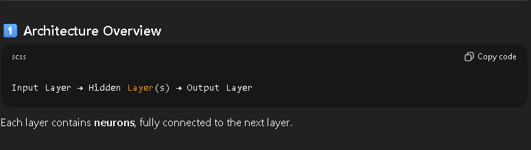
2 - Network Structure
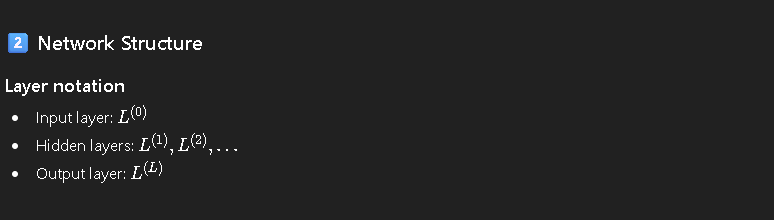
3 - Neuron Model
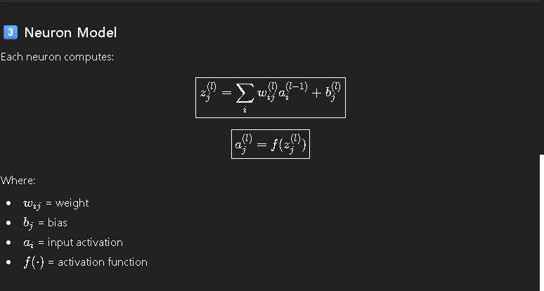
4 - Matrix Form (Layer-wise)
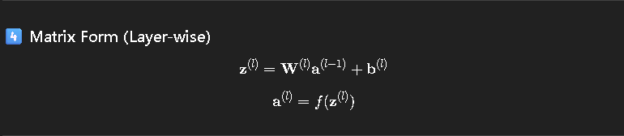
5 - Common Activation Functions
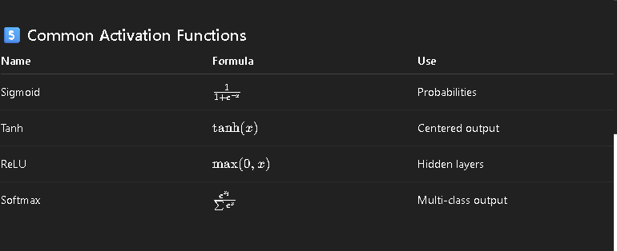
6 - Output Layer Design
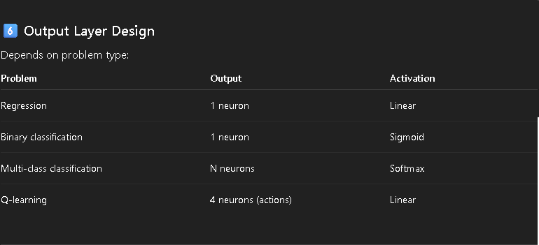
7 - Loss Functions
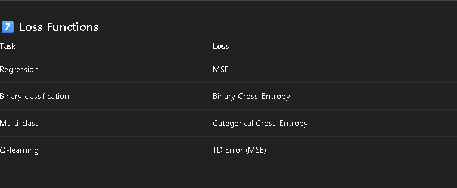
8 - Forward Pass
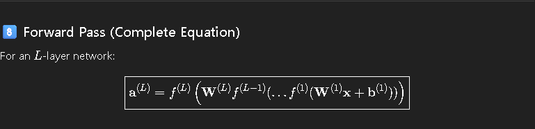
9 - Parameter Count
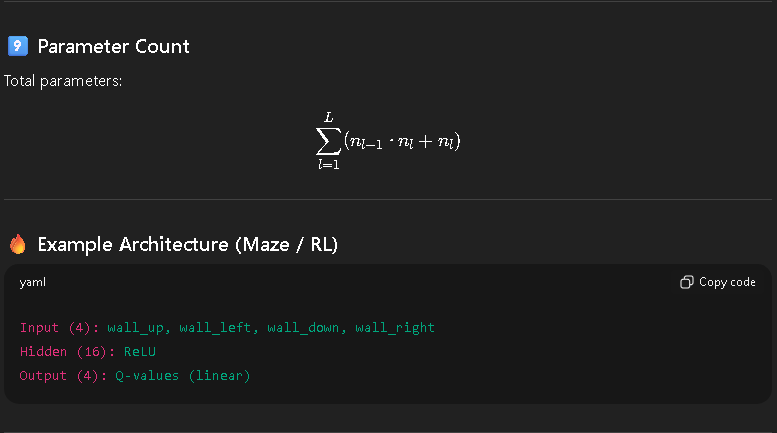
10 - What Feedforward Networks Can and Cannot Do
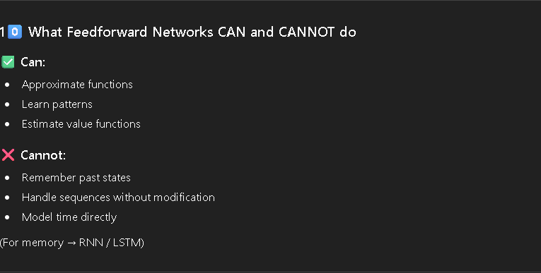
Key takeaway
* Feedforward networks are function approximators
* They map inputs → outputs with learned weights.
Forward Propagation
Below is a clean, math-first explanation of Forward Propagation in a Feedforward Neural Network, step-by-step, exactly what happens from input → output.
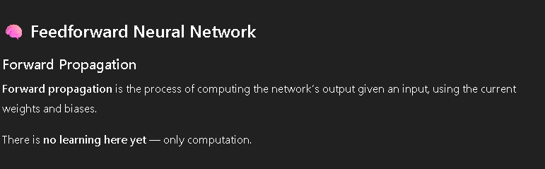


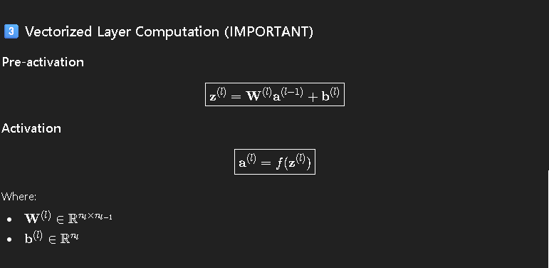
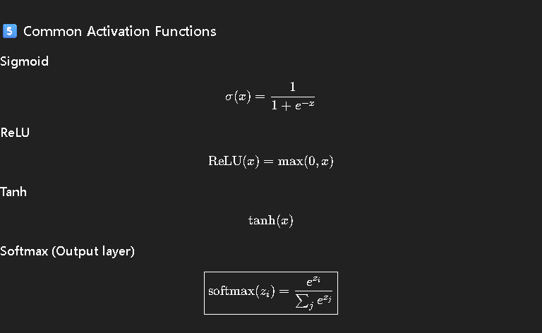
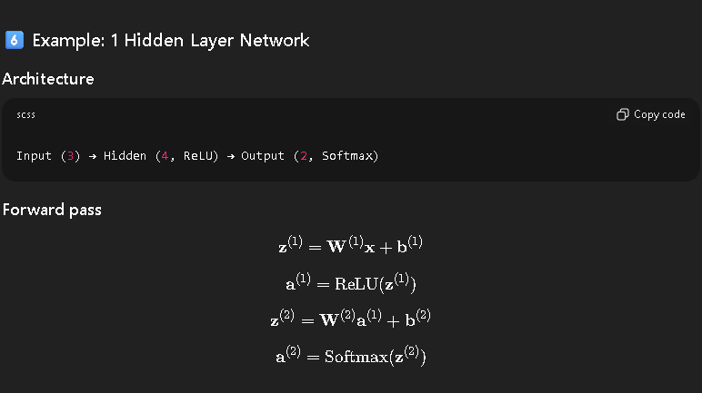
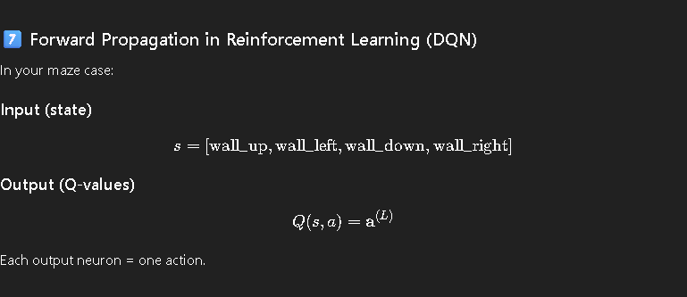
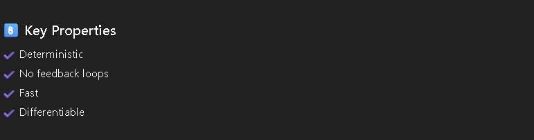
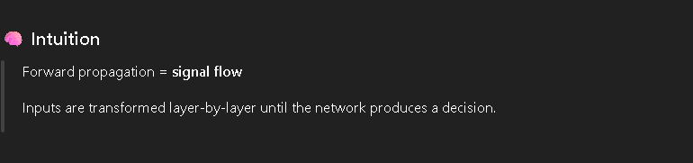
Activation Functions
Below is a structured, equation-complete explanation of Activation Functions in a Feedforward Neural Network, focused on why, how, and when to use each.